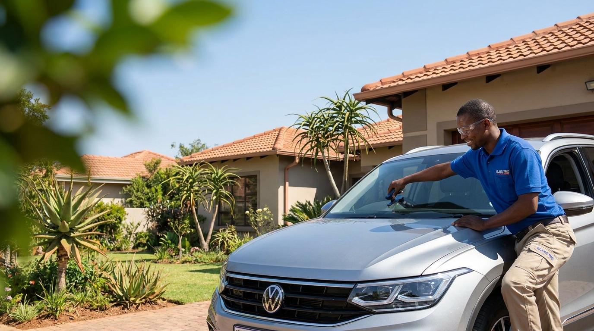

Send a photo
Share the whole windscreen and a close-up showing the damage.
Start with a photograph and your vehicle details. We use that information to prepare a useful assessment and quotation.
Get Started
Four clear stages keep the customer informed before anyone travels to the vehicle.
Share the whole windscreen and a close-up showing the damage.
Provide the year, make, model and current vehicle location.
Receive the proposed service, price and available appointment options.
A mobile technician attends the agreed location to complete the work.